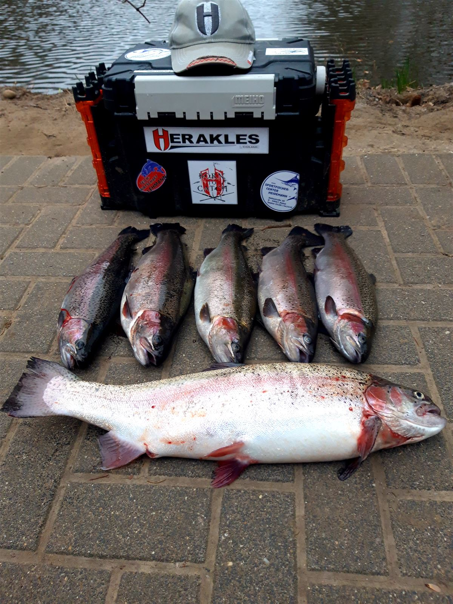

Hofladen
Fisch aus unseren Teichen, frisch ausgenommen oder geräuchert. Dazu Getränke, kleine Snacks und alles an Ködern für Ihren Angeltag.
So funktioniert's
Frischer Fisch auf Vorbestellung
Frisch ausgenommenen Fisch verkaufen wir nur auf Vorbestellung. Schreiben Sie uns am besten eine WhatsApp-Nachricht oder rufen Sie an. Wir machen die Bestellungen morgens für Sie fertig.
Bitte bestellen Sie auch geräucherten Fisch möglichst vor, und geben Sie uns bei größeren Mengen rechtzeitig Bescheid.

| Sorte | Preis / kg |
|---|---|
| Forelle | 13,50 € |
| Lachsforelle | 16,50 € |
| Gold-Lachsforelle | 17,50 € |
| Aal | 22,50 € |
| Saibling | auf Anfrage |
| Stör | auf Anfrage |
| Wels (afrikanisch) | auf Anfrage |
| Sorte | Preis / kg |
|---|---|
| Forelle | 19,00 € |
| Lachsforelle | 21,00 € |
| Aal | 39,50 € |
| Gold-Lachsforelle | auf Anfrage |
| Stör | auf Anfrage |
| Wels (afrikanisch) | auf Anfrage |
Alle Fischpreise pro Kilogramm. Wir bitten um Vorbestellung. Mehr zu Räucherfisch und Fischplatten finden Sie hier.
Vor Ort an der Anlage
Snacks, Getränke & Köder
| Artikel | Preis |
|---|---|
| Bier 0,33 l | 2,00 € |
| Softdrinks 0,33 l (Cola, Fanta, Sprite) | 2,00 € |
| Kaffee | 1,50 € |
| Bratwurst im Brötchen & kleine Snacks | Preise vor Ort |
| Artikel | Preis |
|---|---|
| Bienenmaden | 4,00 € |
| Forellenteig | 6,00 € |
Erhältlich am Kassenhäuschen, auch Bratwurstmarken. Nur Barzahlung.